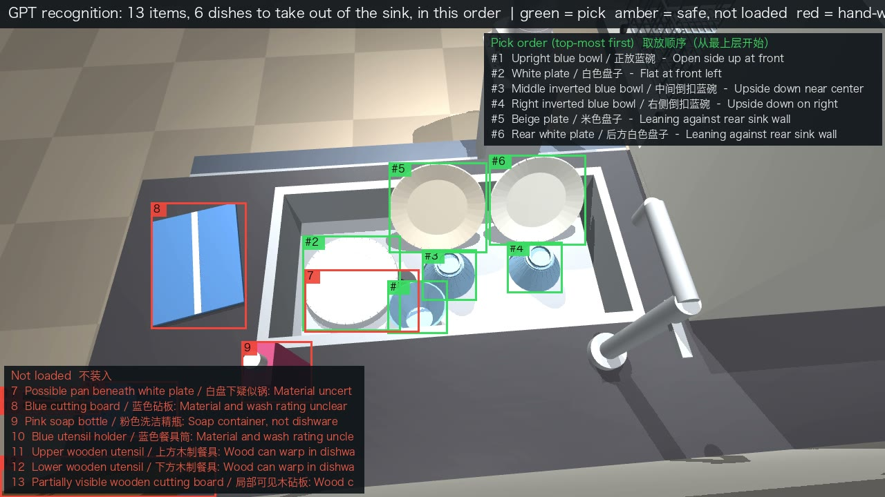

3 · How it works
Dock, see, then nine physical steps


Sources: mobile_pipeline/MOBILE_RESULTS.md, full_pipeline/RESULTS.md
4 · The kitchen
From a messy sink to a running dishwasher

5 / 5 dishes loaded from a messy sink (perceived poses, 1.45–2.7 mm; GPT looks again after every pick), then basket in, door closed, QUICK → POWER: running. Harder layout: 4/6, 2 handed to a person.

Same pipeline on a tidy counter: GPT found 13 / 13 items and the arm placed 5 / 5 dishes (plates lean 1.4–3.7°). With a suction cup: also 5/5.
multi_dish_b/DEMO_NOTES.md (Messy sink, Kitchen) · multi_dish_suction/DEMO_NOTES.md · door starts open, basket out
6 · Real hardware & cost
Every chip has one job

- Franka FR3 + Hand + wrist F/T; 1 kHz torque loop
- Main PC (RT Linux, ROS 2): IK 100 Hz, skills, docking
- STM32H723: wheels, brakes, battery, bumpers, watchdog
- Jetson + RealSense on the wall: camera, Codex calls
- 51.2 V 30 Ah LFP: ≈ 10 Wh per mission, ~95–120 missions per charge
- PILZ safety relay: e-stop cuts arm and wheels with no software in the loop
- BOM ≈ US$53k (≈ S$69k, 28 lines, incl. 10 % contingency); the arm + hand + F/T is 68 % of it
system_design/SYSTEM.md · system_design/bom_table.md · mobile_pipeline/MOBILE_RESULTS.md